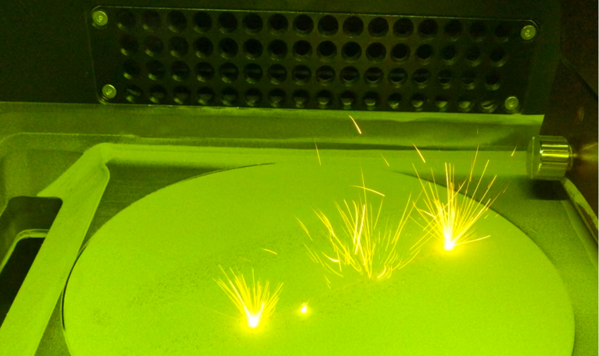
Изготовитель: RITON ADDITIVE TECHNOLOGY CO., LTD
Адрес: Building B, Hainan Industrial Zone, Liwan District, Guangzhou 510378, P.R. China Сайт: www.riton3d.com · Тел.: +86-20-81509265 · Факс: +86-20-81509362 · E-mail: sales@riton3d.com
1. Общие сведения об оборудовании - 1.1 Состав оборудования - 1.2 Технические параметры
2. Эксплуатация оборудования - 2.1 Включение и выключение установки - 2.1.1 Порядок включения - 2.1.2 Порядок выключения - 2.2 Работа с управляющим программным обеспечением - 2.2.1 Работа с управляющей программой 3DPrint - 2.2.2 Работа с программой раскладки VoxelDance Additive — RITON DENTAL - 2.3 Загрузка и выгрузка - 2.3.1 Загрузка и подготовка к печати - 2.3.2 Выгрузка после печати
3. Техническое обслуживание установки - 3.1 Обслуживание оборудования - 3.2 Обслуживание системы фильтрации и циркуляции газа - 3.3 Замена гибкого ракеля - 3.4 Запреты при обслуживании оборудования
4. Типовые неисправности и способы их устранения
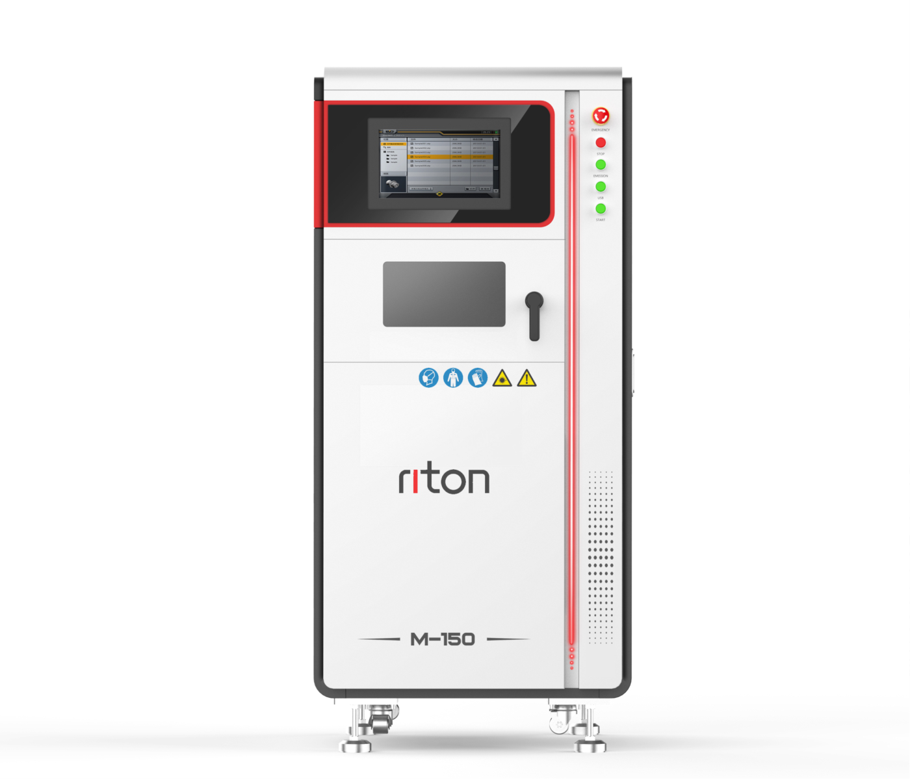
Установка 3D-печати с одним лазером состоит из лазерной системы, оптической сканирующей системы, системы управления перемещениями, системы циркуляции и очистки защитного газа, системы человеко-машинного интерфейса, системы водяного охлаждения и других узлов.
В установке применён волоконный лазер с отличным качеством пучка и исключительно высокой стабильностью.
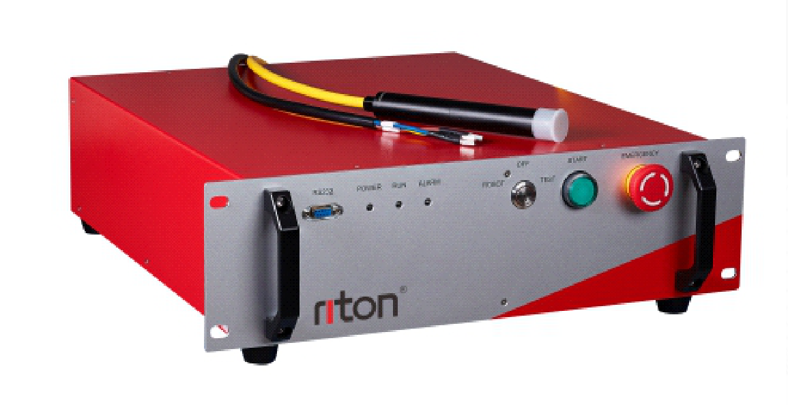
Сканирующая система установки — высокоточная, построена на прецизионном гальванометрическом сканаторе и высококачественном объективе. Она отличается хорошей герметичностью, защитой от влаги и пыли, малыми габаритами, компактностью и прочностью конструкции, высокой мощностью и исключительно стабильными характеристиками, что обеспечивает длительную безотказную работу установки в непрерывном режиме.
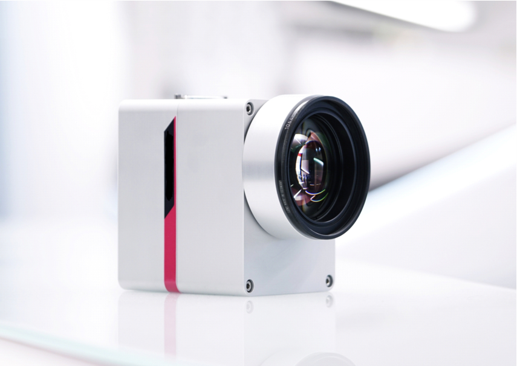
В установке применены серводвигатели Mitsubishi (Япония), обеспечивающие управление приводами узла построения. Они отличаются высоким быстродействием, высокой точностью позиционирования и развитыми функциями автоматической настройки, что позволяет без труда подобрать коэффициенты усиления контура.
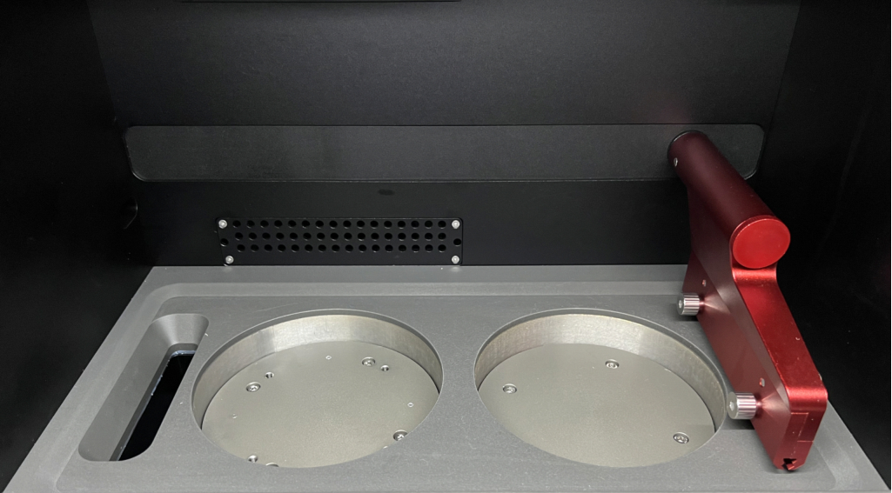
Система циркуляции и очистки газа данной установки включает четыре части: впускной клапан, выпускной клапан, один высокоточный газоанализатор содержания кислорода и встроенный фильтр-циркулятор.
Примечание. При печати титановыми сплавами система циркуляции и очистки газа включает четыре части: впускной клапан, выпускной клапан, два высокоточных газоанализатора содержания кислорода и выносной фильтр-циркулятор (см. рисунки ниже).
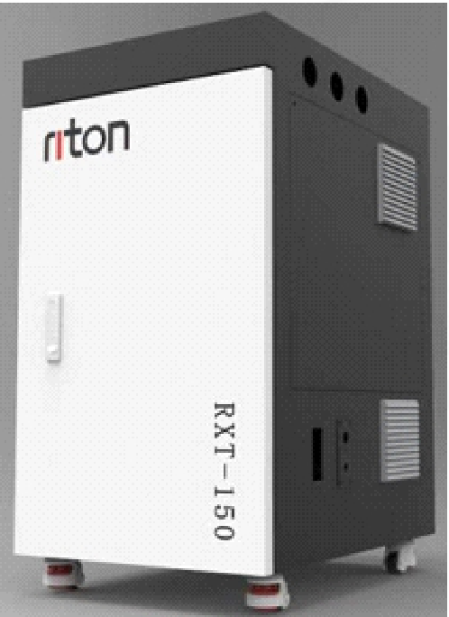
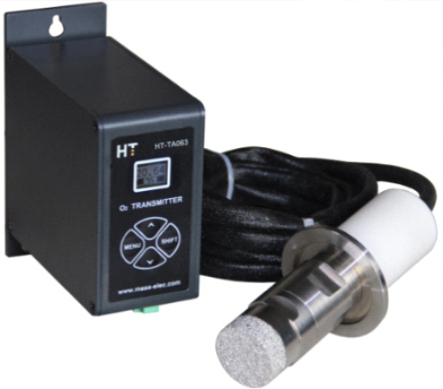
Программное обеспечение человеко-машинного интерфейса установки — это управляющая программа 3DPrinter собственной разработки для лазерных установок 3D-печати. Она реализует импорт файлов сканирования, задание технологических параметров, управление системой нанесения порошка, управление системой сканирования, запуск лазерной системы, контроль контурной информации в реальном времени и другие функции.
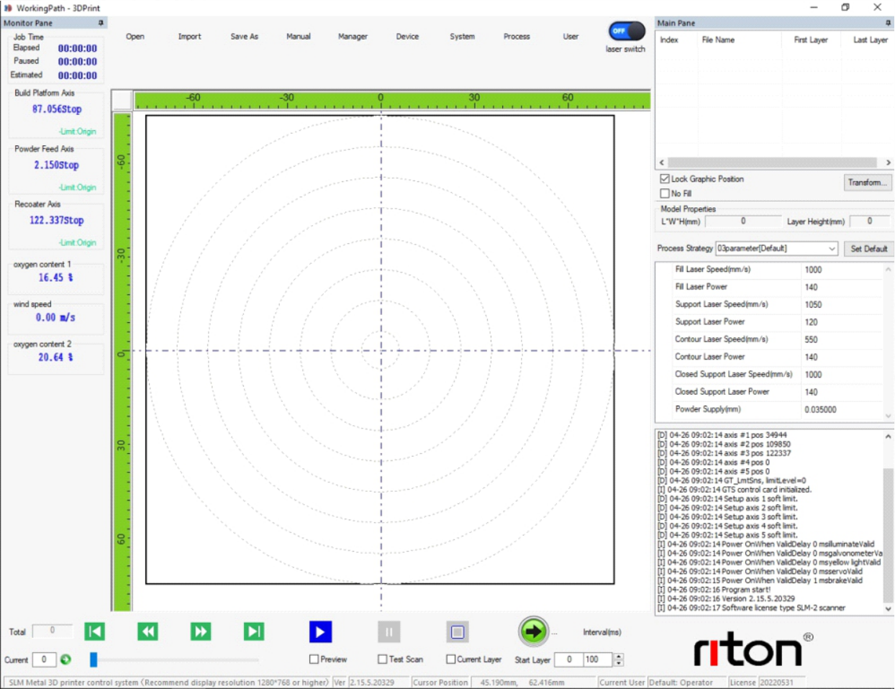
Чиллер для лазера — специализированное охлаждающее оборудование данной установки. Чиллер оснащён интеллектуальной регулируемой системой охлаждения с автоматическим термостатированием, что существенно повышает стабильность поддержания температуры.
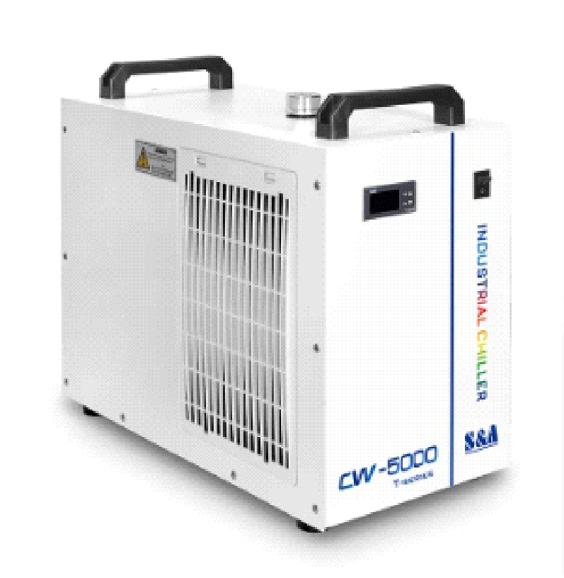
Примечание. Если температура окружающего воздуха ниже 16 °C, перед печатью необходимо заранее включить чиллер лазера. После того как температура охлаждающей воды в чиллере поднимется до 25 °C, выключите лазер в программе и включите его снова — после этого установка будет работать нормально.
Таблица 1.1 — Основные параметры установки 3D-печати по металлу с одним лазером
| Наименование | Значение |
|---|---|
| Модель | M-150 |
| Масса основного блока | 500 кг |
| Габариты основного блока | 790 × 1000 × 1660 мм |
| Размер зоны построения | ⌀150 × 100 мм |
| Материалы построения | кобальт-хромовый сплав, титановый сплав и др. |
| Напряжение питания | 220 В |
| Потребляемая мощность | 3 кВт |
| Лазерная система | волоконный лазер мощностью 500 Вт |
| Длина волны излучения | 1,064 мкм |
| Диаметр сфокусированного пятна | 20–60 мкм |
| Толщина слоя построения | 20–60 мкм |
| Скорость сканирования | 0–7000 мм/с |
| Требования к защитному газу | азот или аргон |
| Производительность | 200 коронок или 14 бюгельных каркасов за 4,5 часа |
| Температура окружающего воздуха | 15–35 °C |
| Относительная влажность воздуха | < 95 % |
| Уровень шума | < 70 дБ |
Содержание раздела:
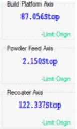
Примечание. Если нулевое положение оси цилиндра подачи порошка задано в верхней точке, при возврате в ноль следите за сбором порошка, чтобы он не высыпался за пределы цилиндра.
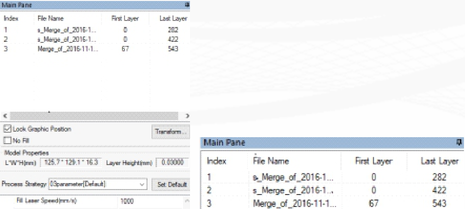
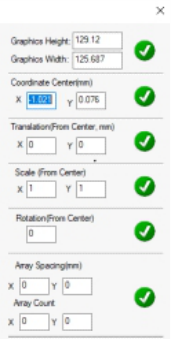
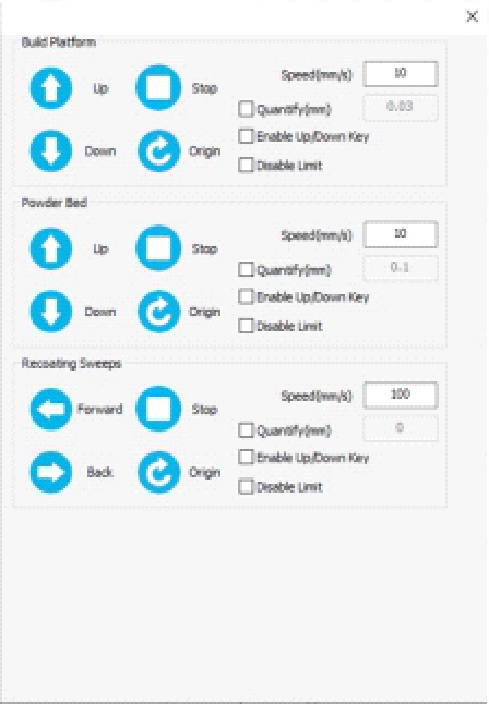
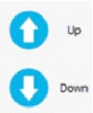
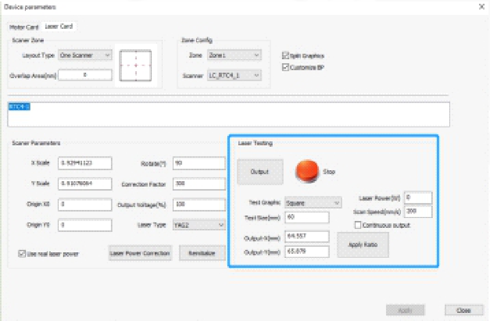
Нажмите кнопку пуска: начинается печать, выполняется подготовительный цикл, при этом автоматически контролируется соответствие газовой среды рабочим требованиям.
Система автоматически включает продувку до тех пор, пока оба датчика содержания кислорода не покажут, что газовая среда камеры соответствует требованиям печати; после этого начинается собственно печать. Жёлтая сигнальная лампа автоматически гаснет, включается зелёная.
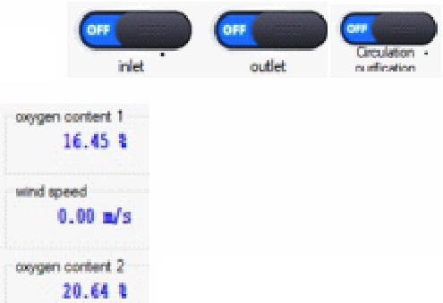
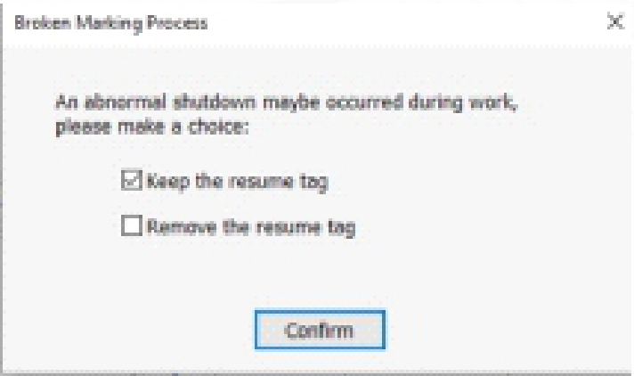
Если вместо номера отображается «1», это номер слоя, сохранённый в программе печати. Если номер слоя по каким-либо причинам не был записан, откройте журнал, найдите последнюю запись за соответствующее время и определите номер последнего напечатанного слоя — это и есть слой, на котором произошло отключение питания.
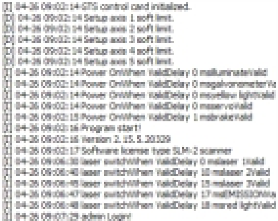
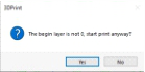
Затем программа спросит, нужно ли поднять цилиндр построения и цилиндр подачи порошка (при возврате каретки ракеля оба цилиндра опускаются на 0,5 мм).
Важно! Убедитесь, что оба цилиндра находятся на уровне рабочей поверхности, иначе возобновление печати завершится неудачей.
- Если цилиндры на уровне рабочей поверхности — поднимать не нужно, выберите «Нет».
- Если они не на уровне рабочей поверхности (при возврате каретки ракеля оба цилиндра опускаются, чтобы избежать задевания) — выберите «Да».
Примечание. Чтобы улучшить качество поверхности при возобновлении печати, убедившись, что цилиндр построения и цилиндр подачи порошка находятся на уровне рабочей поверхности, можно вручную опустить цилиндр построения на толщину одного слоя (чтобы количество порошка было меньше) и поднять цилиндр подачи порошка на 0,5 мм (чтобы обеспечить достаточную подачу порошка).
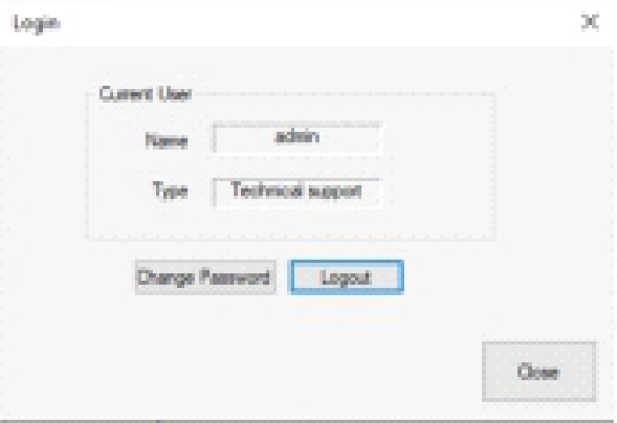
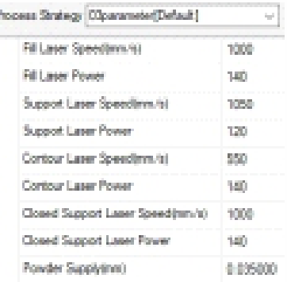
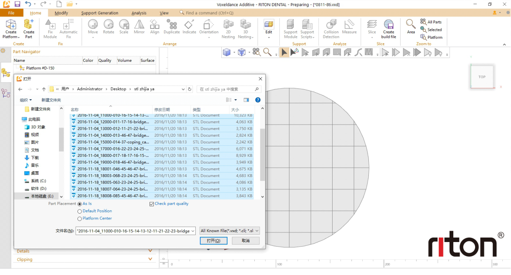
Исходя из принципов SLM-печати по металлу, к направлению установки и способу поддержки зубных мостов и коронок предъявляются особые требования. С помощью программы подготовки к 3D-печати VoxelDance Additive — RITON DENTAL выполняется предварительная обработка данных STL, что обеспечивает эффективную и удобную раскладку.
а) Откройте платформу печати и пакетно импортируйте данные. Двойным щелчком по значку программы откройте платформу устройства D-150; в панели быстрого доступа нажмите «Open File» и импортируйте нужные файлы формата STL.
б) Проверьте качество данных коронок. В столбце «Quality» списка деталей можно быстро оценить качество данных: значок «√» означает, что деталь без дефектов; значок «!» означает, что требуется исправление — для быстрого восстановления используйте автоматические или полуавтоматические инструменты ремонта.
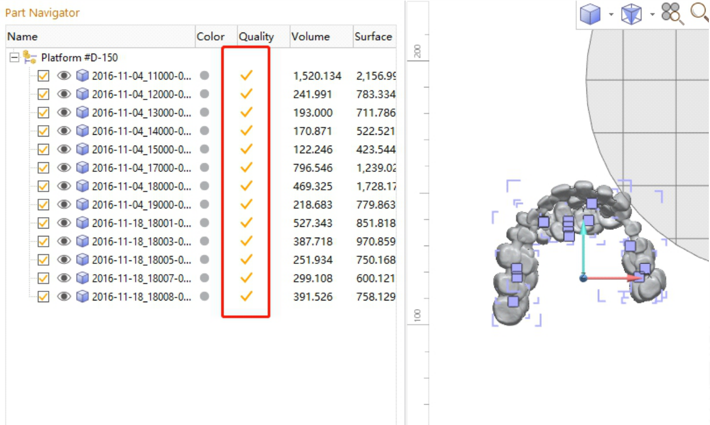
в) Отрегулируйте угол установки коронок. Импортированные детали обычно расположены навалом и ориентированы неупорядоченно. С помощью инструментов «Rotation» (поворот), «Automatic placement» (автоматическая расстановка), «Move and place» (перемещение и размещение) разнесите детали и подберите каждой подходящий угол так, чтобы окклюзионная (жевательная) поверхность была обращена вверх. В программе есть и специальный инструмент установки коронок, выполняющий размещение одним нажатием.
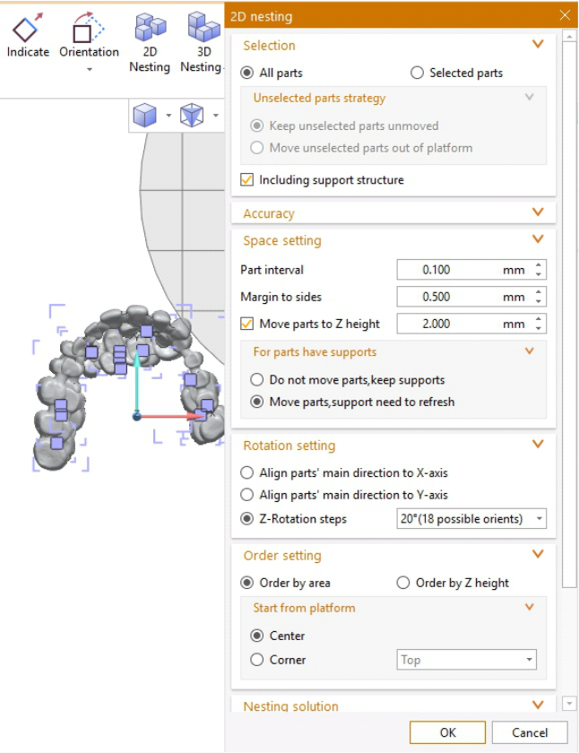
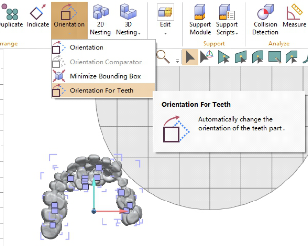
После автоматической расстановки положение деталей можно скорректировать, размещая их как можно плотнее. В завершение с помощью функции «Collision detection» (контроль пересечений) проверьте, не соприкасаются ли поддержки между собой.
г) Добавьте блочные (перекрёстные) поддержки. Выделите все детали, нажмите «Support Script» и выберите сценарий «Crown Cross Block». Затем выберите детали протяжённых мостов (от четырёх единиц) и запустите сценарий «Crown Cross». В завершение объедините все детали, сохранив существующие поддержки. На запрос об удалении исходной детали ответьте подтверждением.
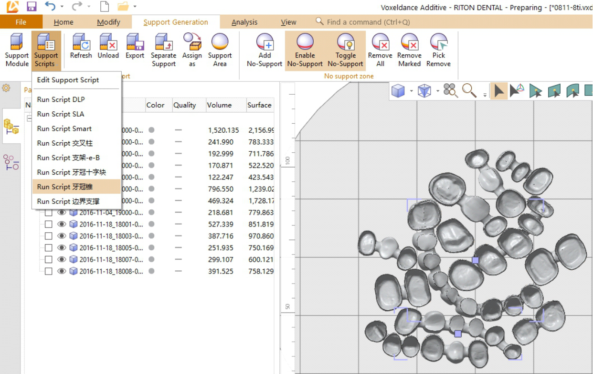
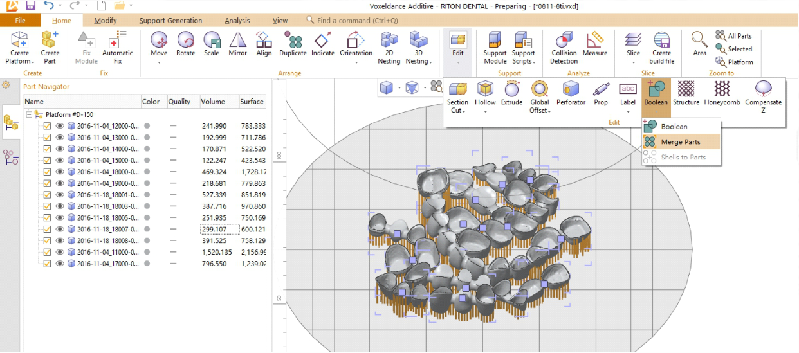
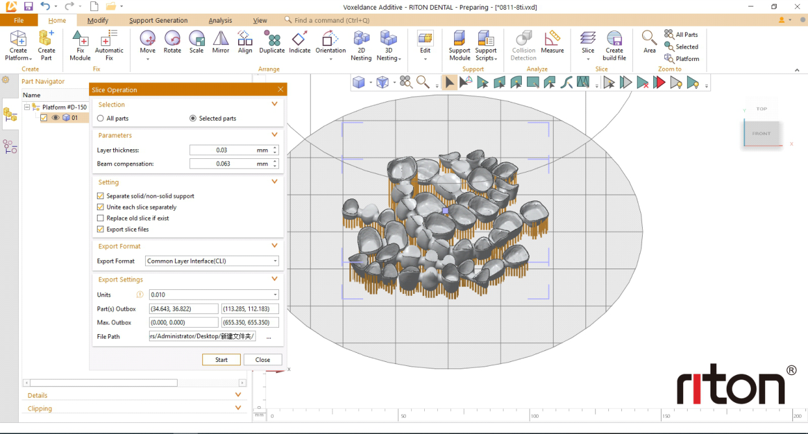
д) Постройте слои (слайсинг). Выберите инструмент слайсинга, задайте толщину слоя (30 мкм) и нажмите «Start» — слои будут сформированы за 3–5 секунд. Здесь же задаётся путь экспорта: по завершении файл слоёв автоматически сохраняется по указанному пути.
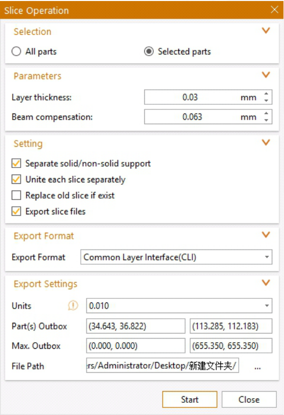
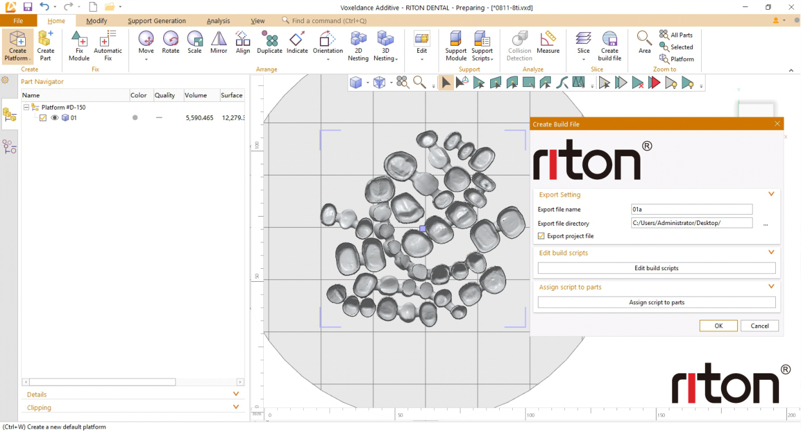
е) Постройте траектории и сформируйте файл печати. Выделите все данные слоёв, создайте задания обработки, назначьте деталям заранее подготовленный сценарий обработки, выберите путь сохранения и нажмите OK — будет сформирован файл формата RTP, пригодный для непосредственной печати. Путь экспорта также задаётся здесь; по завершении расчёта файл RTP автоматически сохраняется по указанному пути.
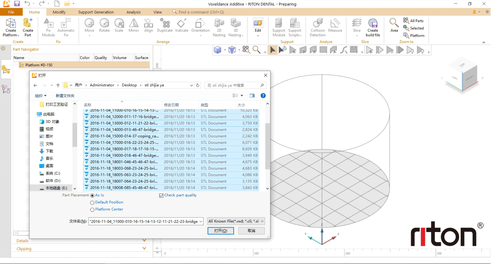
На одной платформе установка позволяет разместить до 200 коронок с данными для левой и правой стороны. Полная обработка данных занимает около 10 минут.
Исходя из принципов SLM-печати по металлу, печать съёмных бюгельных каркасов имеет свои особенности. На этапе предварительной обработки данных способ добавления и удаления поддержек влияет на точность, а угол установки каркаса — на плотность прилегания и производительность построения. С учётом этих особенностей предварительная обработка данных STL выполняется в программе VoxelDance Additive — RITON DENTAL, что обеспечивает эффективную и удобную раскладку.
а) Откройте платформу печати и пакетно импортируйте данные каркасов. Двойным щелчком по значку программы откройте платформу устройства; в панели быстрого доступа нажмите «Open File» и импортируйте нужные файлы формата STL.
б) Проверьте качество данных каркасов. В столбце «Quality» списка деталей оцените качество данных: «√» — деталь без дефектов, «!» — требуется исправление; для быстрого восстановления используйте автоматические или полуавтоматические инструменты ремонта.
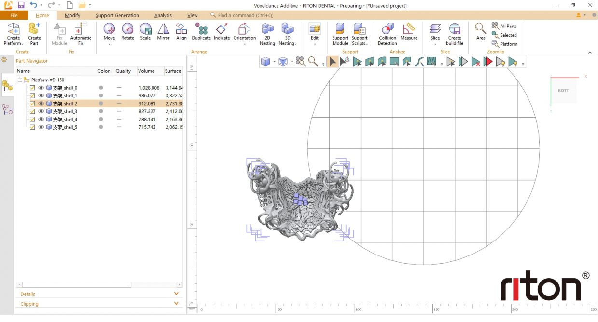
в) Отрегулируйте угол установки каркасов. Импортированные детали обычно расположены навалом и ориентированы неупорядоченно. Инструментами «Rotation», «Automatic placement» и «Move and place» разнесите детали и подберите каждому каркасу подходящий угол установки так, чтобы прилегающая поверхность была обращена вверх, а рельефная — вниз. При этом угол наклона основной прилегающей поверхности не должен выходить за центральную ось; каркас следует устанавливать по возможности круче, чтобы уменьшить площадь нависающих поверхностей и тем самым снизить повреждение рельефа поддержками.
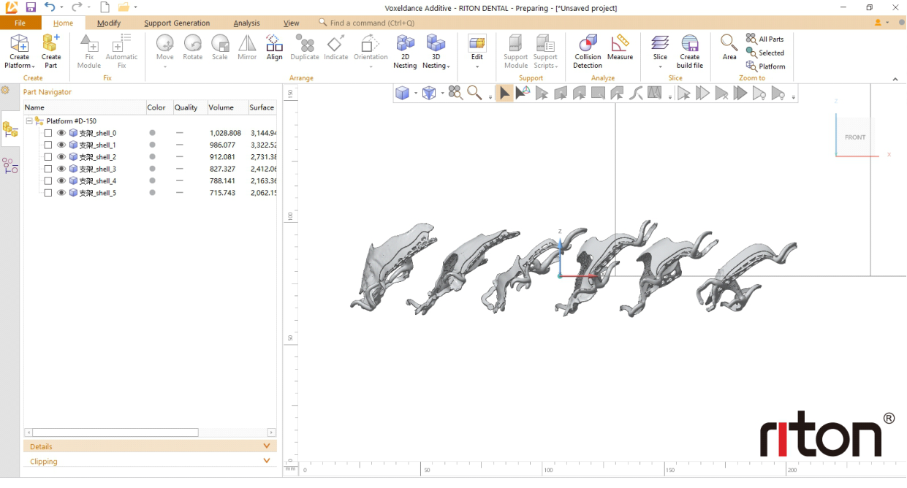
г) Добавьте усиливающие рёбра (стойки). Инструментом «Create pillar» добавьте к каркасу необходимое количество усиливающих стержней, предотвращающих деформацию каркаса в процессе печати. Усиливающие стержни следует располагать по возможности параллельно плоскости подложки, а вспомогательные и основные стержни — по возможности перпендикулярно друг другу.
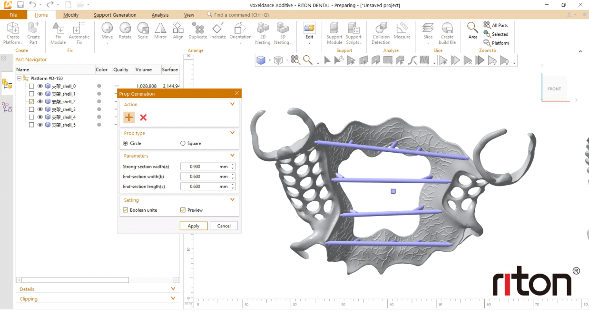
д) Разместите каркасы в пределах платформы. Выделите все детали, задайте высоту деталей над подложкой 2,5 мм и переместите каркасы с поддержками на платформу по одному. Пока детали не пересекаются в трёхмерном пространстве, их можно располагать как можно плотнее. В завершение функцией «Collision detection» проверьте, не соприкасаются ли поддержки между собой.
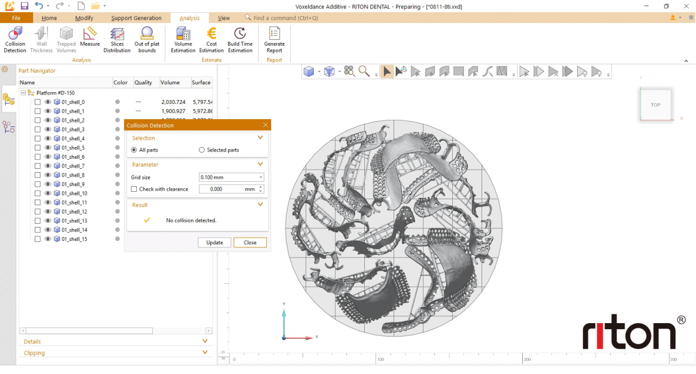
е) Добавьте линейные и столбчатые вспомогательные поддержки. Последовательно выбирая детали каркасов, перейдите в режим ручного построения поддержек; обведите язычную пластину каркаса, дуги и кромки пластин, создайте новую поверхность поддержки и запустите сценарий линейных поддержек. В сетчатых участках деталей добавьте некоторое количество столбчатых поддержек, чтобы усилить связь детали с подложкой и предотвратить коробление.
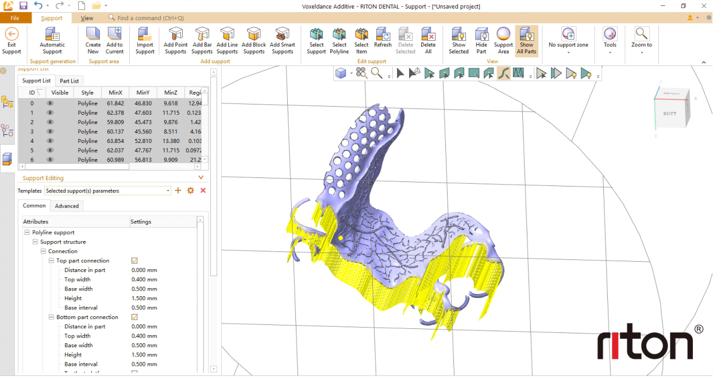
ж) Добавьте интеллектуальные поддержки. Объединив все детали с сохранением существующих поддержек, запустите сценарий интеллектуальных поддержек — для всех деталей будут построены специальные поддержки.
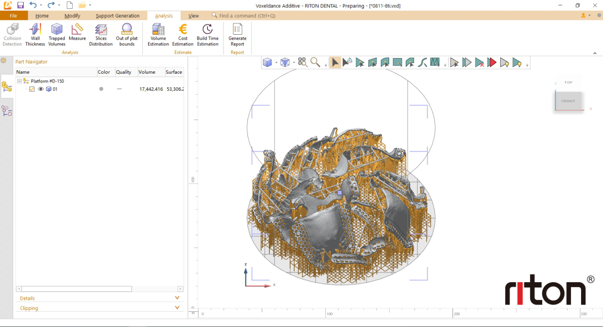
з) Постройте слои (слайсинг). Выберите инструмент слайсинга, задайте толщину слоя (40 мкм) и нажмите «Start» — слои будут сформированы за 3–5 секунд. Путь экспорта задаётся здесь же; по завершении файл слоёв автоматически сохраняется по указанному пути.
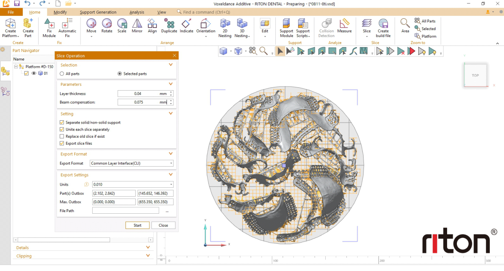
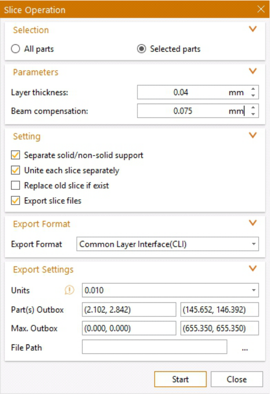
и) Постройте траектории и сформируйте файл печати. Выделите все данные слоёв, создайте задания обработки, назначьте деталям заранее подготовленный сценарий обработки, выберите путь сохранения и нажмите OK — будет сформирован файл формата RTP, пригодный для непосредственной печати. По завершении расчёта файл RTP автоматически сохраняется по заданному пути.
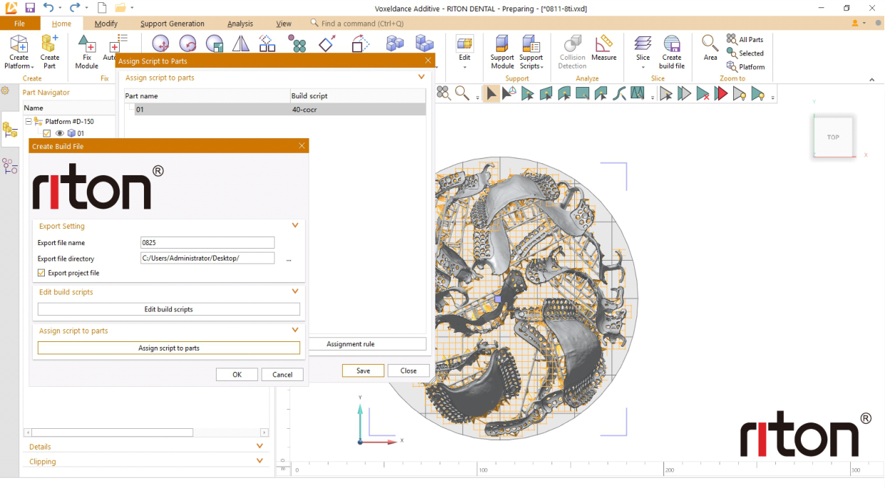
На одной платформе установка позволяет разместить до 15–17 бюгельных каркасов. Полная обработка данных занимает около 30 минут.
После запуска печати программа автоматически откроет впускной и выпускной клапаны для вытеснения кислорода. Отрегулируйте маховичок «расход при продувке» так, чтобы расход защитного газа составил 30–40 л/мин. Когда газоанализатор зафиксирует, что содержание кислорода в камере построения ниже 0,03 %, программа автоматически начнёт печать; после этого маховичком «расход поддержания» уменьшите расход газа до 1–3 л/мин.
| Узел | Порядок обслуживания | Примечания |
|---|---|---|
| Основной блок | Пылесосом и хлопчатобумажной тканью очистить поверхность установки, нижний привод и защитное стекло от порошка. | Проверить нормальность подачи питания; проверить чистоту снаружи; проверить узлы перемещения на наличие порошка и посторонних шумов. |
| Двухцилиндровая система подачи порошка | Проверить нормальность перемещения цилиндра подачи порошка, цилиндра построения и каретки ракеля, а также срабатывание концевых ограничений. | |
| Баллон защитного газа | Проверить, что давление защитного газа выше 3 МПа. | При недостаточном количестве защитного газа чистота атмосферы в камере построения не гарантируется, что ухудшает качество построения. |
| Пневматические шланги | Своевременно заменять повреждённые шланги. | При осмотре выявляются повреждения и утечки воздуха. |
| Цилиндр сбора избыточного порошка | Проверить заполнение цилиндра сбора. | Ежедневно удалять порошок из цилиндра сбора и просеивать его для повторного использования. |
| Система фильтрации и циркуляции газа | Очистить впускной патрубок системы циркуляции газа от порошка; проверить, не требуется ли замена или очистка фильтрующего элемента. | Перед ежедневным пуском слегка встряхнуть впускной патрубок системы фильтрации для удаления порошка. При длительном процессе проверять фильтр ежедневно и заменять почерневший фильтрующий элемент. |
| Узел | Порядок обслуживания | Примечания |
|---|---|---|
| Ракель | При неравномерном нанесении порошка требуется замена рабочей кромки. | Проверить ракель на наличие повреждений и деформации. |
| Направляющая каретки ракеля | Снять верхнюю крышку направляющей и пылесосом удалить с направляющей пыль. | Только для моделей D-120 и D-280. |
| Защитное стекло сканатора | Проверить стекло на запылённость и своевременно очистить. | После длительной обработки протирать стекло специальной оптической салфеткой лёгкими движениями от центра к краю по кругу; недопустимо протирать возвратно-поступательными движениями, повторное использование салфетки не допускается. |
| Фильтрующий элемент циркуляционного фильтра | Очистить фильтрующий элемент. | Очищать фильтрующий элемент один раз в неделю. |
| Пылесос | Удалить внутренние загрязнения. | Утилизировать собранную пыль, своевременно очищать фильтрующую корзину. |
| Просеивание порошка | Просеивать порошок через сито 250 меш для удаления посторонних включений. | Отработанный порошок просеивать и очищать еженедельно. |
| Узел | Порядок обслуживания | Примечания |
|---|---|---|
| Основной блок | Очистить внутреннее пространство основного блока от пыли. | Не допускать накопления пыли, влияющего на нормальную работу прочих систем. |
| Камера построения | Очистить внутреннее пространство камеры построения. | Не допускать оседания пыли на поверхности порошка. |
| Система водяного охлаждения | Проверить уровень воды в чиллере. | При слишком низком уровне долить воду. |
| Узел | Порядок обслуживания | Примечания |
|---|---|---|
| Фильтрующий элемент циркуляционного фильтра | Заменить фильтрующий элемент. | Замена фильтрующего элемента каждые шесть месяцев. |
| Узел | Порядок обслуживания | Примечания |
|---|---|---|
| Оптический модуль | Очистить поверхности оптических элементов, проверить их на наличие повреждений; выполнить калибровку точности построения. | Выполняется через каждые 5000 часов работы силами технических специалистов компании Riton. |
| Лазер | Заменить фильтрующую прокладку чиллера. | Выполняется силами технических специалистов компании Riton. |
| Газоанализатор кислорода | Проверить исправность работы. | При необходимости замены — силами технических специалистов компании Riton. |
| Промышленный компьютер | Проверить объём памяти компьютера, регулярно удалять устаревшие данные. |
Периодичность очистки и замены элементов системы фильтрации газа зависит от условий и продолжительности работы, поэтому фильтрующий элемент необходимо своевременно проверять и заменять.
Порядок замены отработавшего фильтрующего элемента:
Очистка порошкового бака (очистка бункера порошка; дисковый затвор D1 порошкового бака закрыт):
Увлажнение фильтрующего элемента и порядок его замены (для предотвращения самовозгорания при замене элемента).
Классификация порошков:
| Шаг | Действие | Требования и меры предосторожности |
|---|---|---|
| 1 | Фильтрующий элемент подлежит замене; элемент отработал более 5 циклов. | Обязательно наденьте защитную одежду и подготовьте порошковый огнетушитель. |
| 2 | Выдержать 1 час. | |
| 3 | Открыть клапан сброса C3, открыть клапан наддува бака Q1, открыть клапан увлажнения фильтрующего элемента Q2a. После увлажнения закрыть клапан наддува Q1, через 30 с закрыть клапан увлажнения Q2a, ещё через 30 с закрыть клапан сброса Q3. Увлажнить фильтрующий элемент 2–3 баками воды. | 1. При заполнении бака водой ручной шаровой кран должен быть закрыт. 2. Рабочее давление воздуха 0,5–0,8 МПа. 3. Каждый бак воды должен быть израсходован на увлажнение полностью. 4. Оснастку для обслуживания см. в приложении 1. 5. Если распыление одной заправки воды длится более 2 минут, см. приложение 1. |
| 4 | Обесточить установку: порошки класса A выдержать 1 час, класса B — 8 часов. | Электростатический разряд должен быть надёжно отведён. |
| 5 | Отвернуть болты крышки фильтра. | Не открывайте крышку фильтра сразу после того, как болты отвёрнуты. |
| 6 | Закрыть дверцу и выдержать 15 минут. | |
| 7 | Медленно открыть крышку фильтра. | Крышку необходимо открывать медленно, чтобы не создать заметного потока воздуха. |
| 8 | Извлечь фильтрующий элемент и заменить фильтр. | 1. Извлекайте элемент осторожно и опускайте отработавший элемент в бак с водой. 2. При обращении с отработанным порошком не допускается заметное движение воздуха — иначе возможно самовозгорание хлопьев порошка. |
| 9 | Выполнить увлажнение, проверив, не засорена ли форсунка. | Проверка обязательна. Правильный результат — зонтичный факел распыла. При засорении см. приложение 2. |
| 10 | Установить новый фильтрующий элемент. | 1. Внутреннюю полость фильтра протереть насухо, без следов влаги. 2. Фильтрующий элемент надёжно затянуть, антистатический провод подключить. |
| 11 | Закрыть крышку фильтра и затянуть болты. | 1. Болты затягивать крест-накрест, обеспечивая герметичность при умеренном усилии затяжки. 2. Уплотнительную ленту дверцы очистить от посторонних частиц. |
Меры пожарной безопасности.
- Открыв крышку фильтра, выдержите 1–3 часа: искры естественным образом окислятся и выгорят. После извлечения фильтрующего элемента используйте оснастку по приложению 2.
- При появлении открытого пламени на поверхности фильтрующего элемента направьте на очаг струю из распылителя воды или порошкового огнетушителя, обеспечив безопасность. Порядок применения огнетушителей см. в приложении 3, оснастку для обслуживания после извлечения элемента — в приложении 2.
- Крышку фильтра необходимо открывать медленно, чтобы не создать заметного потока воздуха.
В установке применён гибкий ракель, который со временем изнашивается и деформируется. Это приводит к неравномерному нанесению порошка на подложку, а после каждого прохода на цилиндре построения и цилиндре подачи остаётся избыточный порошок. При износе или деформации ракель необходимо своевременно заменить.
Для обеспечения исправной работы установки 3D-печати при выполнении обслуживания по разделу 3.1 необходимо соблюдать следующие запреты:
Если пользователь эксплуатирует установку без разрешения изготовителя и нарушает изложенные выше запреты либо неправильно эксплуатирует оборудование, все возникшие вследствие этого убытки несёт эксплуатирующая организация.
Проверьте исправность лазера, перезапустите его; проверьте сканирующую оптику и защитное стекло на наличие налёта и своевременно протрите и очистите их.
Восстановите деталь в программе VoxelDance Additive — RITON DENTAL, устранив дефекты в виде разрывов кромок и промежутков в контуре, и проверьте, не меньше ли минимальная толщина детали критического значения для точности построения (как правило, не менее 0,12 мм). После изменения положения детали и восстановления данных запустите печать повторно.
Проверьте чистоту и целостность ракеля, при необходимости замените его. Проверьте, не отсырел ли порошок: отсыревший порошок легко сбивается в комки, что приводит к неравномерному нанесению. Влажный порошок просушите в вакуумном сушильном шкафу.
Наиболее частые причины коробления и брака построения:
Последовательно проверьте возможные причины брака. Если брак построения не связан с ракелем и порошком, обработку можно приостановить, удалить данные бракованных деталей и продолжить построение остальных.
Остановите обработку, запишите число напечатанных слоёв и оставьте оба цилиндра и ракель в неподвижном состоянии. Удалив бракованные детали в программе VoxelDance Additive — RITON DENTAL, сохраните абсолютное положение остальных деталей неизменным, выполните слайсинг, построение траекторий и прочие операции, импортируйте новое задание в управляющую программу и выберите последний обработанный слой, чтобы продолжить печать с него.
RITON ADDITIVE TECHNOLOGY CO., LTD
Адрес: Building B, Hainan Industrial Zone, Liwan District, Guangzhou 510378, P.R. China Сайт: www.riton3d.com Тел.: +86-20-81509265 · Факс: +86-20-81509362 E-mail: sales@riton3d.com
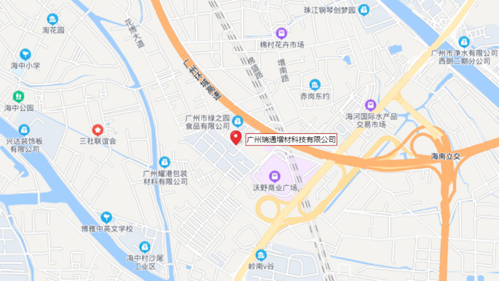
Оригинал — англоязычная редакция руководства (исходный файл называется M-150说明书（英）), то есть сам английский текст является переводом с китайского, выполненным машинно и без редактуры. В нём много искажённых терминов и оборванных фраз. Перевод выполнен по смыслу, с восстановлением исходной технической терминологии; ниже перечислено, что именно было восстановлено, и какие противоречия остались в самом оригинале.
| В английском оригинале | Что это на самом деле | В переводе |
|---|---|---|
| «shop paint», «shop powder», «the shop» | 铺粉器 / 铺粉 — устройство нанесения порошка | ракель, нанесение порошка |
| «Put a seal on» (заголовок п. 5) | 正式打印 — переход к собственно печати | «Запуск печати» |
| «Power continued» (заголовок п. 6) | 断电续打 — продолжение печати после сбоя питания | «Возобновление печати после отключения питания» |
| «Incoming operation» / «Out operation» | 进机 / 出机 — загрузка и выгрузка | «Загрузка и подготовка к печати» / «Выгрузка после печати» |
| «molding warehouse», «forming warehouse» | 成型仓 — камера построения | камера построения |
| «vibrator», «vibration lens» | 振镜 — гальванометрический сканатор | сканатор |
| «deaeration cycle purification system» | 除气循环净化系统 | система циркуляции и очистки защитного газа |
| «Finish Size» | 成型尺寸 | размер зоны построения |
| «Service Rating» | потребляемая мощность | потребляемая мощность |
| «Host» | 主机 | основной блок |
| «trachea» (дословно «трахея») | 气管 — пневматический шланг | пневматический шланг |
| «bracket», «stent» | 支架 — бюгельный каркас (съёмный протез) | бюгельный каркас |
| «typesetting» | 排版 — раскладка деталей на платформе | раскладка |
| «Mixing plate» | выравнивание подложки по уровню порошка | «Выровняйте подложку по уровню порошка» |
| «VoxelDance AddiDve» | опечатка вместо VoxelDance Additive; в оглавлении — «ADDI D VE» | VoxelDance Additive |
| «Automturn off» | обрыв слова: automatically turn off | «автоматически гаснет» |
| № | Место | Что не сходится |
|---|---|---|
| 1 | п. 2.2.2, шаг «а» | Сказано открыть «платформу устройства D-150», хотя всё руководство описывает модель M-150. Вероятно, фрагмент перенесён из руководства другой модели. |
| 2 | п. 3.1, еженедельное обслуживание | В строке про направляющую каретки ракеля указано «только для моделей D-120, D-280» — то есть пункт не относится к M-150, но оставлен в таблице. |
| 3 | п. 1.2 и п. 2.2.2 | Производительность заявлена как «200 коронок или 14 бюгельных каркасов за 4,5 часа», а в разделе раскладки сказано, что на платформе размещается 15–17 каркасов. |
| 4 | п. 3.2, внешняя циркуляция | Клапан сброса обозначен то как Q3 (в тексте), то как C3 (в блок-схеме). Шаровой кран Q1 описан одновременно и как кран наддува бака, и как кран промывки порошкового бака. |
| 5 | п. 1.1 | Про систему циркуляции сказано «включает четыре части» и в базовом, и в титановом исполнении, хотя перечни различаются составом (1 или 2 газоанализатора, встроенный или выносной фильтр). |
| 6 | п. 3.2 | Даны ссылки на «приложение 1», «приложение 2» и «приложение 3» (оснастка для обслуживания, порядок применения огнетушителей), но самих приложений в руководстве нет — их следует запросить у изготовителя. |
| 7 | п. 2.2.1, шаг 4 | Фраза про замену уплотнительного кольца в оригинале оборвана и не образует законченного указания; переведена максимально близко к тексту. |